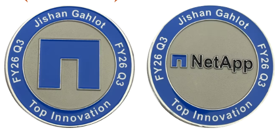

Professional Summary
AI Technical Product Manager with 4.5+ years of experience leading AI, automation, and enterprise workflow transformation across Renewals, Quoting, Customer Success, and leadership operations. Skilled in building and delivering AI-powered internal products, chatbots, and workflow solutions using Microsoft Copilot Studio, Power Apps, Power Automate, Python Pair Programming, VS Code Studio, Cursor, SharePoint List, Abacus AI, GitHub CLI, APIs, and MCP-based enterprise knowledge integrations. Experienced in translating business problems into scalable solutions through requirements gathering, PRD/BRD creation, stakeholder alignment, testing, release planning, and continuous enhancement.
I lead AI Office Hours to train Renewals and Quoting teams on new AI technologies and practical ways to automate manual work. I run sessions across AMER, EMEA, and APAC, ensuring Renewal Specialists and Quoting Specialists follow along during live demos. After each session, I create and share documentation so teams can replicate the automation independently.
Previously served as an Associate Project Manager at Omnissa / VMware by Broadcom, where I drove leadership reporting and large-scale project coordination using tools such as Salesforce, Jira, and Oracle Portal. Proven track record of managing high-volume operations, including 80+ projects per month at VMware, while improving reporting, stakeholder communication, process efficiency, and project hygiene.
Good foundation in ML algorithms using Pandas, NumPy, Matplotlib, and other ML libraries — with hands-on experience supporting teams by creating algorithms for resume parsing and business-focused technology delivery during my internship at TalentBox.

FY26 Q3 Top Innovation Award — CSO Organization
Received the FY26 Q3 Top Innovation Award in the CSO organization for transforming manual processes into AI-driven solutions through custom AI agents, chatbots, and workflows.